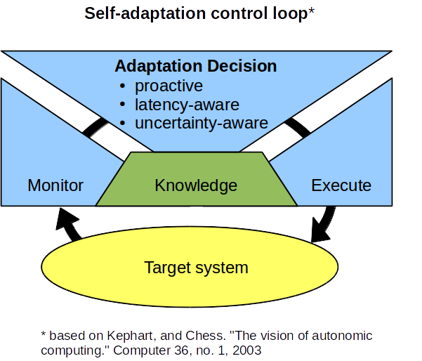
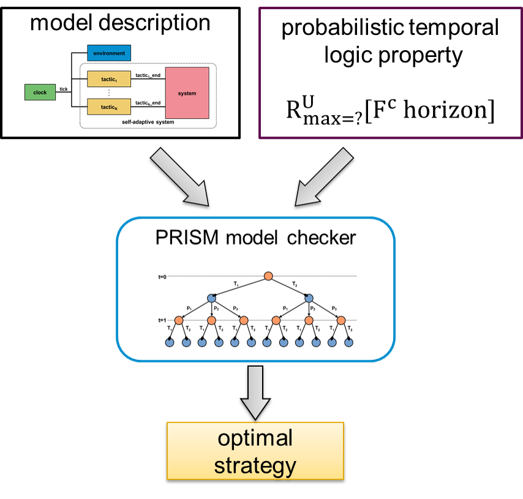
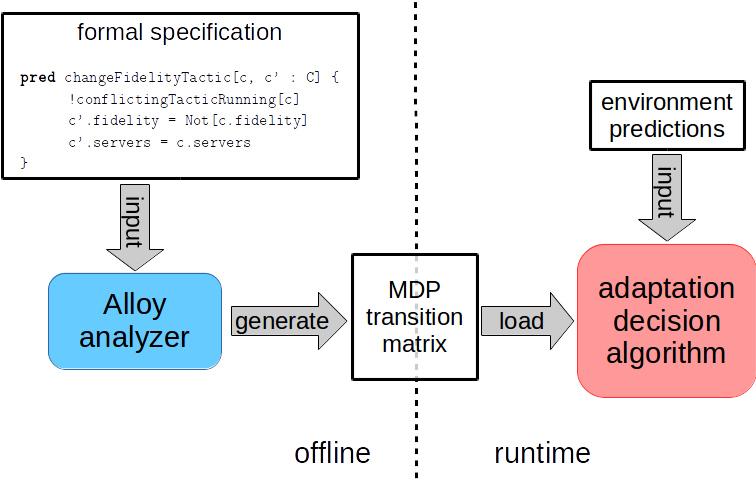

Self-Adaptation

Self-adaptation allows a system to
change its behavior or structure in response to changes in
the environment in which it operates or the system itself,
so that it continues to satisfies its requirements despite
these changes. The adaptations are planned and executed in
terms of adaptation tactics—actions that perform a change in
the system. Although some adaptation tactics can be almost
instantaneous (e.g., a parameter change), other tactics take
some time to complete; that is, these adaptation tactics
have latency.
Proactive Latency-Aware Self-Adaptation
Most adaptation approaches ignore tactic latency when deciding how to adapt, and that may result in suboptimal adaptations for two reasons. First, if there are two possible tactics the system could use, and one is faster than the other, the system is not able to select the faster tactic. Second, if tactics have latency and the system reacts to changes, the change in the system will be late with respect to when it is needed. We propose proactive latency-aware adaptation as a way to address these two problems and achieve better effectiveness in self-adaptation. Our approach takes into account the latency of adaptation tactics when deciding how to adapt. In addition, to make sure the system adapts in a timely manner, the approach is proactive, so that it can initiate adaptations with the necessary lead time. Proactive adaptation requires making decisions based on predictions of the near future state of the environment. In the case of DART systems, these predictions can be based on a combination of the physical movement of the system elements in space and time, and information about the relevant characteristics of the environment. Nevertheless, these predictions are subject to uncertainty. Our approach explicitly considers the uncertainty of these predictions when deciding how to adapt.

Probabilistic model checking approach
Probabilistic model checking is a formal technique to verify systems with stochastic behavior. By analyzing the composition of a model of the system with a model of the stochastic behavior of the environment, we can leverage probabilistic model checking to take into account the uncertainty of the environment predictions. In particular, we use models in which the adaptation decisions are left as nondeterministic choices, and exploit the ability of the PRISM probabilistic model checker to synthesize strategies or policies that resolve those choices in a way that maximizes the expected value of an objective function. In that way, we can make adaptation decisions that take into account the uncertainty of the environment predictions by exploring all the possible evolutions of the environment in a finite look-ahead horizon. More details about this approach can be found in the following publication:Proactive Self-Adaptation under Uncertainty: a Probabilistic Model Checking Approach. Gabriel Moreno, Javier Camara, David Garlan, Bradley Schmerl. In proceedings of the European Software Engineering Conference and the Symposium on the Foundations of Software Engineering (ESEC/FSE), 2015.

A faster solution approach
The previous approach involves two steps done by the model checker. First, the model checker builds a Markov decision process (MDP) from a formal specification of the system. Then, the model checker solves the MDP, computing an optimal policy to achieve the adaptation goal. This whole process is done at run time every time an adaptation decision has to be made. We have developed another approach that decouples the construction of the MDP from its solution. That way, the construction of the MDP from formal specifications can be done offline, and the solution is the only part that remains to be done at run time. In addition, the solution algorithm leverages the structure of the problem to reduce the number of states of the environment that have to be considered at each iteration. In our experiments we have found the decision time to be reduced 10 times with respect to the decision based on probabilistic model checking. Additionally, the approach can achieve adaptation goals that involve the maximization of some objective function subject to probabilistic constraints. For example, it can maximize the expected number of objects detected, subject to surviving the mission with 95% probability. More details about this approach can be found in the following publication:Proactive Self-Adaptation under Uncertainty: a Probabilistic Model Checking Approach. Gabriel Moreno, Javier Camara, David Garlan, Bradley Schmerl. In proceedings of the International Conference on Autonomic Computing (ICAC), 2016.